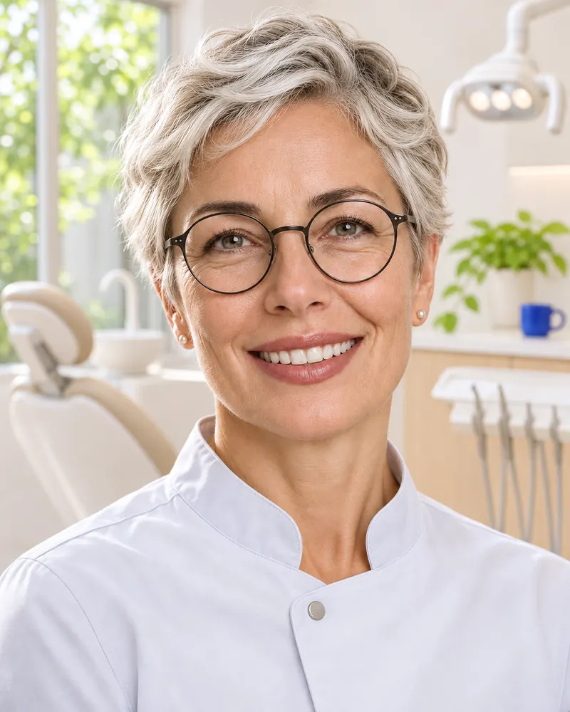

Галина Северина
Ортодонт, детский стоматолог
Принимает детей с 3 лет, знакомит с кабинетом, лечит молочные и постоянные зубы.
Записаться к врачуСайт использует cookies и сервис Яндекс Карты: при показе карты Яндекс получает ваш IP‑адрес и cookies. Подробнее — в политике обработки данных.Сайт использует cookies и Яндекс Карты: при показе карты Яндекс получает ваш IP‑адрес и cookies. Подробнее
Знакомим ребёнка с кабинетом без лечения. Лечим молочные и постоянные зубы с 3 лет.

Первый визит без лечения.
Показываем инструменты и объясняем простыми словами.
Сидите рядом на всём приёме.
Имеются противопоказания, необходима консультация специалиста.
Кабинет, врач, инструменты.
Работаем под анестезией, без спешки.
Когда ребёнок готов.

Принимает детей с 3 лет, знакомит с кабинетом, лечит молочные и постоянные зубы.
Записаться к врачу